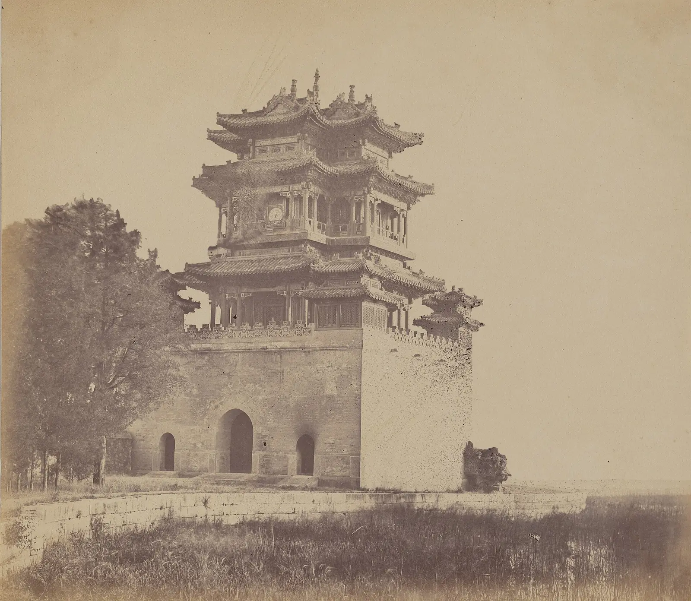
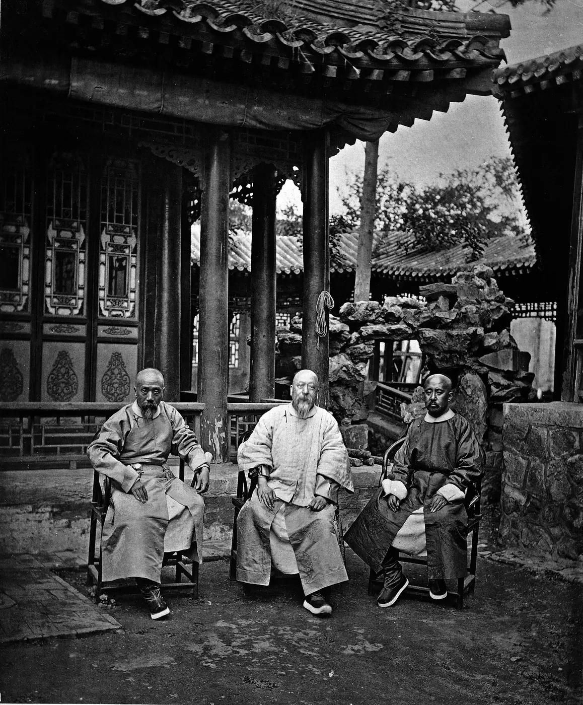

HIST 270 · Chapter 18 · Lecture 3 · Historian's Workshop
Self-Strengthening
Four people, one question: should China learn from the people who burned the emperor's garden?

Between 1860 and 1895 a group of Qing officials tried to make China strong enough to defend itself by learning Western technology while keeping Confucian government. Today you meet four people at the center of that effort, and you become the class expert on one of them. You will read what he really wrote, then teach his story to everyone else.
How Today Works
- Listen (about 8 minutes). Your professor gives a short opening presentation on the Self-Strengthening movement.
- Read (about 10 minutes). Open the page for your assigned person below. Read his story, the project or event he is tied to, and the primary sources. Everything is read here in class.
- Prepare (about 5 minutes). Fill in the five teaching boxes at the bottom of your page.
- Teach (about 4 minutes each). Tell the class who your person was and what happened, read one sentence from his own words aloud, explain why it matters, and ask your question.
- Exit ticket and submit. Answer the exit-ticket questions on your page, click Export to .txt, and upload the file to Canvas.
Your answers save in this browser as you type, on this device only. If the download does not work, use Copy all and paste your work into Canvas.
Choose Your Person

1811–1872
Zeng Guofan
The scholar-general who beat the Taiping, then built the Jiangnan Arsenal with machines from America.
Open teaching page →
1823–1901
Li Hongzhang
Arsenals, shipyards and the Beiyang Fleet, and the war of 1894–1895 that tested them.
Open teaching page →
1809–1874
Feng Guifen
The refugee scholar who asked why China was large and yet weak, and proposed what to learn from the West.
Open teaching page →
1804–1871
Woren
The emperor's tutor who led the opposition to Western teachers of mathematics in 1867.
Open teaching page →Shared Context: Beijing, After the Fire
October 1860. For days, British and French soldiers have been looting the Yuanmingyuan, the emperor's Garden of Perfect Brightness, northwest of Beijing. Westerners call it the Summer Palace. They carry off furniture, porcelain, silk robes and whatever else they can take. Then, on the orders of the British envoy, Lord Elgin, British troops set it on fire. The fires burn for days.
How did it come to this? Twenty years earlier, Britain won the First Opium War and forced China to open five ports. Britain wanted more. In 1856 Qing officers arrested the crew of a small ship called the Arrow, and Britain used the arrest as a reason for a second war. France joined. In 1858 their gunboats forced the Qing to sign the Treaties of Tianjin. In 1859 Qing forts at the river mouth drove the British back. In 1860 nearly 18,000 British, Indian and French troops fought their way to Beijing.
The Xianfeng emperor fled north to his hunting retreat at Chengde. He left his 27-year-old brother, Prince Gong, behind to make peace, and Prince Gong signed. Foreign ambassadors could now live in Beijing. More ports opened, including Tianjin, a short ride from the capital. Missionaries could travel and preach in the interior. China paid 16 million ounces of silver and gave Britain the tip of the Kowloon peninsula, across from Hong Kong. Opium, the cause of the first war, was now a legal import. And Russia, without firing a shot, took the lands north of the Amur River and the coast down to Vladivostok.
Inside China, things were even worse. The Taiping rebels held Nanjing and much of the Yangzi valley, and millions had died. The treasury was empty and the old armies were exhausted.
Then the tide turned. Scholar-generals like Zeng Guofan and Li Hongzhang raised new armies, bought foreign guns, and by 1864 had crushed the Taiping. Early in 1861 Prince Gong set up a new office to deal with the foreigners: the Zongli Yamen. Later that year the emperor died. A five-year-old boy now sat on the throne, while his mother, the Empress Dowager Cixi, and the senior Empress Dowager Ci'an ruled "from behind the curtain," and Prince Gong became the leading minister.
Some officials said the lesson of 1860 was clear: learn the foreigners' skills, or be destroyed by them. A scholar named Feng Guifen put it most sharply: "Why are Western nations small and yet strong? Why are we large and yet weak?" Others, led by the Grand Secretary Woren, answered that China's strength had never come from machines, and that learning from the enemy was the worst humiliation of all.

The question for today is easy to ask and hard to answer: Should China learn from the people who burned the emperor's garden?
Words You Will Hear All Day
Sources: Ebrey, ch. 18, pp. 321–323; the Ch. 18, Lecture 3 background essay, “Large and Yet Weak.” Feng's question is quoted in Ebrey, p. 322. Burning and indemnity: Ebrey, pp. 322, 325.
Two More Pieces of the Story
Prince Gong and the Zongli Yamen
Prince Gong (1833–1898), the emperor's younger brother, stayed in Beijing in 1860 and signed the peace. In January 1861 the throne approved his new office for foreign affairs, the Zongli Yamen, China's first foreign office. In 1862 it opened the Tongwen Guan, a school in Beijing to train interpreters. Expecting critics to call it a humiliation to learn from foreigners, Prince Gong's office wrote in January 1867 that “the true policy that is required for this country at this moment to pursue, is to make herself strong.”
Hummel, “I-hsin”; Papers Relating to Foreign Affairs, 1867, pt. 1, doc. 405, p. 475.

Boys Abroad: The Chinese Educational Mission, 1872–1881
In 1871 Zeng Guofan and Li Hongzhang proposed sending 120 boys to study in the United States for fifteen years. Yung Wing, the first Chinese graduate of an American college, ran their schooling. On August 11, 1872, the first thirty boys sailed from Shanghai, and by 1875 all four groups of thirty had gone. They lived with families in Connecticut and Massachusetts. Officials complained that the boys were becoming American, and when the United States refused to admit them to West Point and Annapolis, Li lost interest in defending the mission. In 1881 it was recalled. Many of the students became the engineers, naval officers and diplomats China needed: Zhan Tianyou built the Beijing–Zhangjiakou railway, the first railway built entirely by Chinese, and Tang Shaoyi became the Republic of China's first premier.
Yung Wing, My Life in China and America (1909); Edward J. M. Rhoads, Stepping Forth into the World (2011); CEM Connections, “Origins”; Hummel, “Tsêng Kuo-fan.”

Slides and Backup Reading
- Today's opening slides: “Self-Strengthening: Learning from the Enemy, 1860–1895” (Cloudflare sign-in required)
- Chapter 18, Lecture 3 background essay: “Large and Yet Weak”
- Chapter 18, Lecture 3 slide deck: “Large and Yet Weak” (Cloudflare sign-in required; for anyone who misses class)